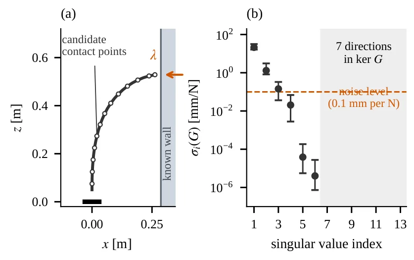
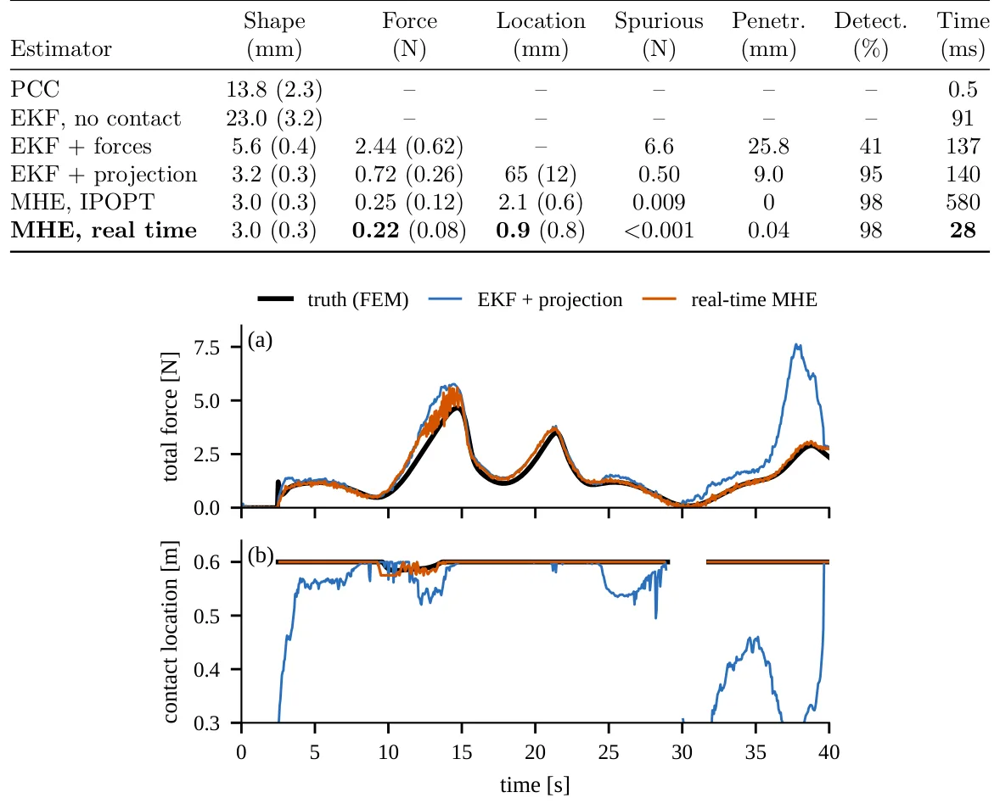
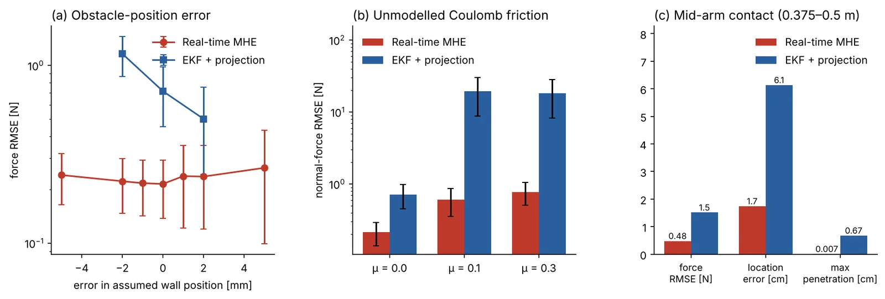
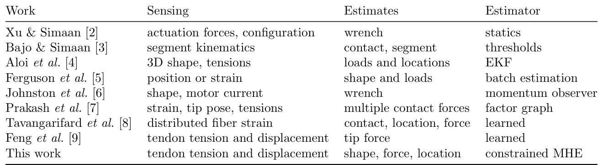

O Problema do Robô Cego
Robôs continuum, especialmente os acionados por tendões, são projetados para navegar por espaços confinados onde instrumentos rígidos não chegam. Cirurgias minimamente invasivas e inspeções em dutos são exemplos clássicos. No entanto, essa flexibilidade traz um desafio sensorial fundamental: o corpo do robô toca superfícies externas, mas os sensores tradicionais estão localizados apenas nas bases dos motores. O robô não 'sente' onde está tocando ao longo do seu comprimento.
Os métodos existentes tentam inferir o contato a partir de desvios de forma ou tensões medidas. Muitos exigem sensores de força integrados ao corpo ou câmeras externas, o que é difícil de implementar em corpos esbeltos, flexíveis e esterilizáveis. Outros usam filtros de Kalman Estendidos (EKF) para estimar cargas externas, mas frequentemente assumem que o ponto de contato é conhecido ou requerem medições de forma precisas.
Este artigo aborda uma limitação estrutural, não apenas de ajuste de parâmetros. Os autores mostram que, sem informação geométrica sobre o obstáculo, o mapeamento entre forças de contato e medições de tendões possui um espaço nulo de dimensão pelo menos sete. Isso significa que, matematicamente, é impossível distinguir onde o contato ocorre apenas olhando para as tensões dos tendões, a menos que se imponha uma estrutura ao problema.

Identificabilidade e a Solução Geométrica
A contribuição central deste trabalho é provar que a força de contato se torna localmente identificável se a geometria do obstáculo for conhecida. Ao impor condições de não-penetração e complementaridade (a força só existe se houver contato, e é zero se houver distância), o sistema recupera a observabilidade. Os autores demonstram que, nessas condições, o sistema com entradas de contato desconhecidas é localmente exponencialmente fortemente detectável.
Em termos práticos, isso significa que o estimador pode distinguir entre uma deformação causada por uma força na ponta e uma deformação causada por uma força no meio do corpo, desde que saiba que existe uma parede em uma posição específica. A restrição geométrica elimina os graus de liberdade que antes tornavam o problema indeterminado.
Isso contrasta com trabalhos anteriores que discutiam observabilidade de componentes de força em contatos conhecidos. Aqui, o foco é determinar onde ao longo do corpo o contato ocorre, algo crítico para segurança e controle em ambientes não estruturados.
O Estimador de Horizonte Móvel Restrito (MHE)
Para implementar essa teoria, os autores propõem um Estimador de Horizonte Móvel Restrito (MHE, do inglês Moving Horizon Estimation). Diferente do EKF, que lineariza o sistema em cada passo e assume ruídos gaussianos, o MHE resolve um problema de otimização em tempo real, minimizando o erro entre as medições previstas e as reais, sujeito a restrições físicas.
O MHE codifica explicitamente as condições de não-penetração, forças não-negativas e complementaridade. Em vez de usar uma função de custo suave que pode violar essas restrições, o algoritmo as impõe diretamente. Para viabilizar a execução em tempo real, eles substituem a condição de complementaridade por uma penalidade linearizada, resolvendo o problema como um Programa Quadrático (QP) a cada amostra.
O resultado é um estimador que roda em tempo real, exigindo apenas um QP por amostra. Os autores também fornecem um resultado de estabilidade robusta local, garantindo que o estimador converge para o estado verdadeiro sob certas condições de erro limitado e perturbações.
Benchmarking e Resultados
Os autores avaliaram o método em um benchmark de elementos finitos de um robô de duas seções pressionando e deslizando contra uma parede. Os resultados foram contundentes: o MHE localizou o contato com erro de 0,9 mm e estimou a força com erro de 0,22 N. Em comparação, um EKF ajustado com projeção de estado teve erros de 65 mm e 0,72 N, respectivamente.
A precisão do MHE não veio apenas de um ajuste fino. Sob erros milimétricos na posição assumida da parede e atrito não modelado da parede, o MHE manteve a precisão, enquanto o EKF projetado falhou. Em 40 ensaios com incerteza de modelo aleatória, incluindo atrito de tendões não modelado, o MHE superou o EKF em força e localização em todos os casos.
Um ponto crucial é o controle: sem contato, o MHE não ofereceu vantagem significativa sobre o EKF. Isso confirma que o benefício do MHE vem exclusivamente da capacidade de incorporar as restrições de contato, e não de uma superioridade intrínseca do método de estimação em si.

Robustez e Limitações
A robustez do MHE é sua principal vantagem prática. Em testes de sensibilidade, o erro na posição da parede (RMSE da força) aumentou gradualmente, mas permaneceu baixo mesmo com erros de alguns milímetros. Da mesma forma, a introdução de atrito de Coulomb não modelado na parede não degradou severamente a estimativa de força normal, ao contrário do EKF, que é sensível a discrepâncias no modelo de ruído.
No entanto, o método tem limitações claras. Ele requer conhecimento prévio da geometria do obstáculo. Se o ambiente for desconhecido ou dinâmico de forma imprevisível, o estimador não pode funcionar sozinho. Além disso, a análise de estabilidade é local; grandes erros iniciais ou perturbações extremas podem levar o estimador a divergir.
O paper também nota que o método é computacionalmente mais pesado que o EKF, embora o QP seja resolvido em tempo real. A complexidade cresce com o número de pontos de contato candidatos. Para robôs com muitos segmentos ou pontos de contato potenciais, a otimização pode se tornar um gargalo, exigindo otimizações adicionais de código.

Conclusão e Perspectivas
Este trabalho estabelece que a localização de contato em robôs continuum não é um problema de tuning, mas de modelagem estrutural. Ao incorporar restrições geométricas e de complementaridade em um framework de MHE, é possível recuperar a observabilidade perdida na formulação padrão. Os resultados experimentais validam a teoria, mostrando superioridade consistente sobre métodos baseados em EKF.
Para desenvolvedores e pesquisadores na área, a mensagem é clara: se você tem acesso à geometria do ambiente, use restrições hard em seu estimador. Ignorar a física do contato (não-penetração, complementaridade) leva a ambiguidades matemáticas que filtros lineares não conseguem resolver.
Trabalhos futuros podem explorar a integração deste estimador com mapeamento simultâneo do ambiente, removendo a necessidade de conhecer a geometria do obstáculo a priori. Também é interessante investigar a aplicação em robôs com mais de duas seções e em cenários dinâmicos mais complexos, onde a inércia e o atrito dinâmico desempenham papéis mais significativos.

O que fica
- Contato em robôs continuum é não identificável apenas com tensões de tendões sem restrições geométricas; o espaço nulo do sistema impede a localização única.
- O MHE (Moving Horizon Estimation) com restrições de não-penetração e complementaridade resolve o problema em tempo real via QP, superando EKFs tradicionais.
- O método é robusto a erros de modelo e atrito não modelado, mantendo precisão de 0,9 mm na localização e 0,22 N na força em benchmarks de elementos finitos.
- A vantagem do MHE é específica para cenários de contato; sem contato, ele não oferece vantagem sobre o EKF, confirmando que a melhoria vem das restrições impostas.
Paper original: Locating Contact on Tendon-Driven Continuum Robots From Tendon Measurements Alone via Constrained Moving Horizon Estimation
Comentários
Nenhum comentário ainda. Seja o primeiro.